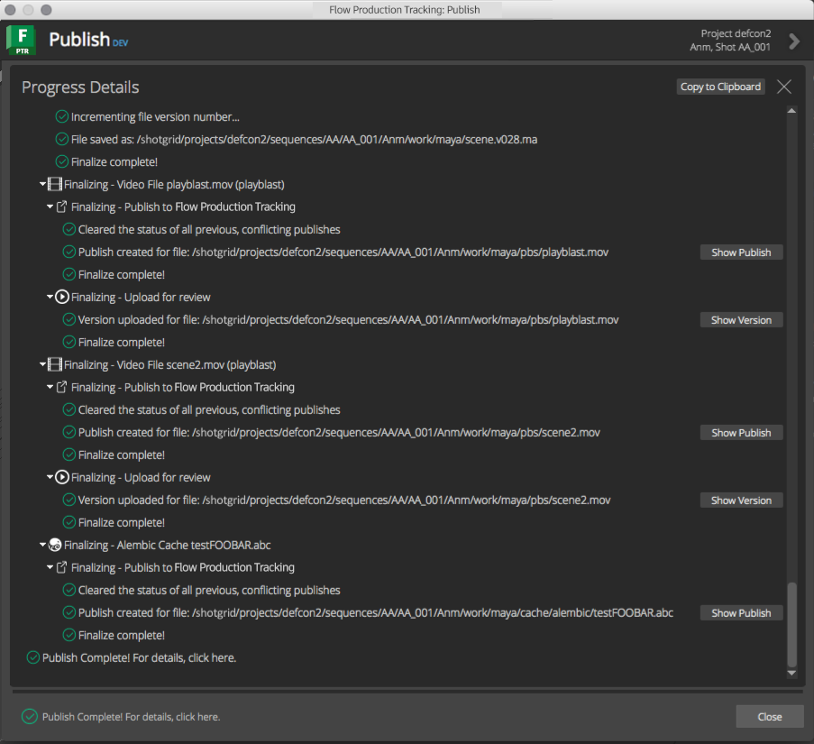
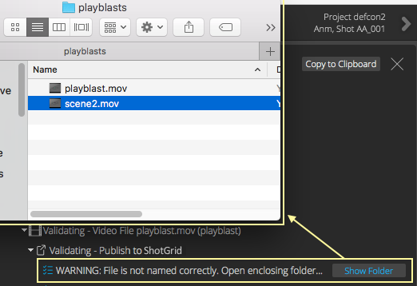
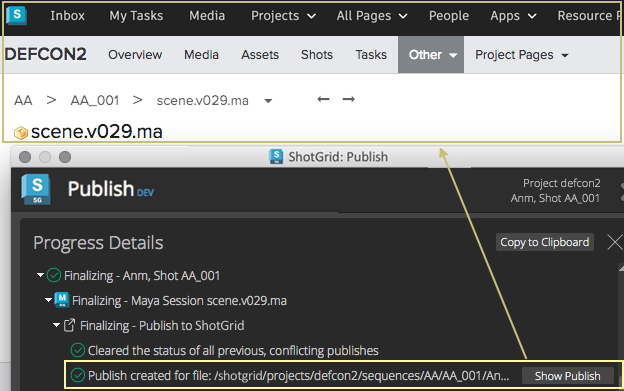
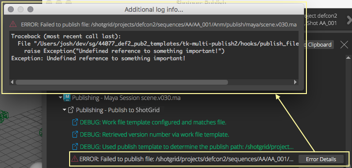
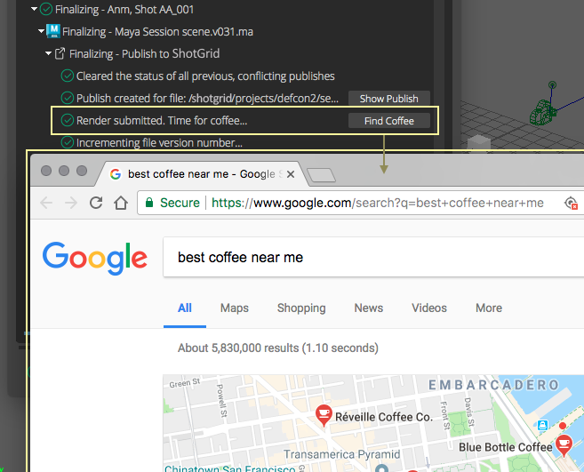

Logging¶
Any logging in the collector and publish plugin hooks will be displayed in the progress details widget of the Publisher. The image below shows logging output from a publish in Maya.
The standard logging methods can be used to display information, warnings, errors, and debug messages to the user.
The publisher has a special logging handler that will make use of the standard
extra dict to display action buttons next to the log messages.
These special action button types are detailed below:
Generic Action¶
A generic button to execute a callback method when clicked.
The dict supplied takes the following form:
"action_button": {
"label": <label>,
"tooltip": <tooltip>,
"callback": <callback>,
"args": <args>
}
The values in the dict are:
label: The text to display on the button itselftooltip: The tooltip text to display when the mouse is over the button.callback: The callable to execute when the button is clicked.args: A dictionary to supply to the callback as keyword args.
Example:
self.logger.error(
"Validation failed! Here's a quick fix that might work!",
extra={
"action_button": {
"label": "Fix Geometry",
"tooltip": "Click this button to auto-fix the bad geometry.",
"callback": self._geometry_fix,
"args": {
"local": True,
"verts": False
}
}
}
)
The image below shows how this action button would appear in the log output view of the publish UI:

Show Folder Action¶
A common action for showing the folder for a supplied path in the system’s file browser.
The dict supplied takes the following form:
"action_button": {
"label": <label>,
"tooltip": <tooltip>,
"path": <path>
}
The values in the dict are:
label: The text to display on the button itself. The default value is"Show Folder". Optional.tooltip: Optional tooltip text to display when the mouse is over the button. The default value is"Reveal in the system's file browser.".path: Required path to the file.
Example:
self.logger.warning(
"File is not named correctly. Open enclosing folder...",
extra={
"action_show_folder": {
"path": file_path
}
}
)
The image below shows how this action button would appear in the log output view of the publish UI.
Show in ShotGrid Action¶
A common action for showing an entity’s detail page in ShotGrid.
The dict supplied takes the following form:
"action_show_in_shotgun": {
"label": <label>,
"tooltip": <tooltip>,
"entity": <entity>,
}
The values in the dict are:
label: The text to display on the button itself. The default value is"Show Entity". Optional.tooltip: Optional tooltip text to display when the mouse is over the button. The default value is"Reveal the entity in ShotGrid.".entity: Required, standard ShotGrid entitydict.
Example:
self.logger.info(
"Publish created for file: %s" % (path,),
extra={
"action_show_in_shotgun": {
"entity": {
"type": "PublishedFile,
"id": 1234
}
}
}
)
The image below shows how this action button would appear in the log output view of the publish UI.
Show More Info Action¶
A common action for showing more information than what typically fits on a single line of logging output. The output will be shown in a text browser popup dialog.
The dict supplied takes the following form:
"action_show_more_info": {
"label": <label>,
"tooltip": <tooltip>,
"text": <text>,
}
The values in the dict are:
label: The text to display on the button itself. The default value is"More Info...". Optional.tooltip: Optional tooltip text to display when the mouse is over the button. The default value is"Show additional logging info.".test: Required,strwith additional information to display to the user. The text can contain html for formatting for display in the popup window (any html tags supported by Qt’s rich text engine).
Example:
try:
# something that might fail...
except Exception as e:
import traceback
self.logger.error(
"Failed to publish file: %s" % (path,),
extra = {
"action_show_more_info": {
"label": "Error Details",
"tooltip": "Show the full error stack trace",
"text": "<pre>%s</pre>" % (traceback.format_exc(),)
}
}
)
raise
The image below shows how this action button would appear in the log output view of the publish UI.
Open URL Action¶
A common action for opening a supplied URL in the default browser.
The dict supplied takes the following form:
"action_show_more_info": {
"label": <label>,
"tooltip": <tooltip>,
"url": <url>,
}
The values in the dict are:
label: The text to display on the button itself. The default value is"Open URL". Optional.tooltip: Optional tooltip text to display when the mouse is over the button. The default value is"Opens a url in the appropriate browser.".url: The url to open.
Example:
self.logger.info(
"Render submitted. Time for coffee...",
extra={
"action_open_url": {
"label": "Find Coffee",
"url": "https://www.google.com/search?q=best+coffee+near+me"
}
}
)
The image below shows how this action button would appear in the log output view of the publish UI.
